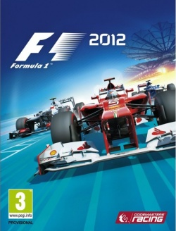

Formula1 2012

Nombre: F1 2012
Plataforma: PC
Género: Simulacion, Carrera
Tamaño: 15GB
Fecha de lanzamiento: 14 de Abril de 2015
Idiomas: Español, Inglés, Francés
Descripción
F1 2012 es un videojuego de carreras desarrollado por Codemasters y lanzado en septiembre de 2012 para PC, PlayStation 3 y Xbox 360. Forma parte de la serie oficial de la Fórmula 1 y cuenta con la licencia de la FIA, lo que permite incluir todos los equipos, pilotos y circuitos de la temporada 2012. El juego ofrece una experiencia de conducción realista, con un sistema de físicas mejorado que afecta el manejo del monoplaza, especialmente en curvas y condiciones de pista variables. Uno de los aspectos más destacados es la implementación del clima dinámico, que puede cambiar durante una carrera, obligando al jugador a adaptar su estrategia y elegir los neumáticos adecuados. Entre sus modos de juego, se encuentra el Modo Campeones, donde el jugador debe enfrentarse a los seis campeones del mundo de la parrilla de 2012 en desafíos específicos. También se introduce el Modo Prueba para Jóvenes Pilotos, diseñado para ayudar a los jugadores a familiarizarse con los controles y la conducción de un monoplaza de Fórmula 1. El modo Carrera Profesional permite iniciar una trayectoria desde un equipo de menor nivel y avanzar hasta los equipos más competitivos a lo largo de varias temporadas. Las decisiones estratégicas, el rendimiento en la pista y la consistencia en los resultados influyen en la progresión dentro del campeonato. F1 2012 se destacó por su jugabilidad mejorada y su sistema de manejo más realista en comparación con entregas anteriores, brindando una experiencia inmersiva para los fanáticos del automovilismo.